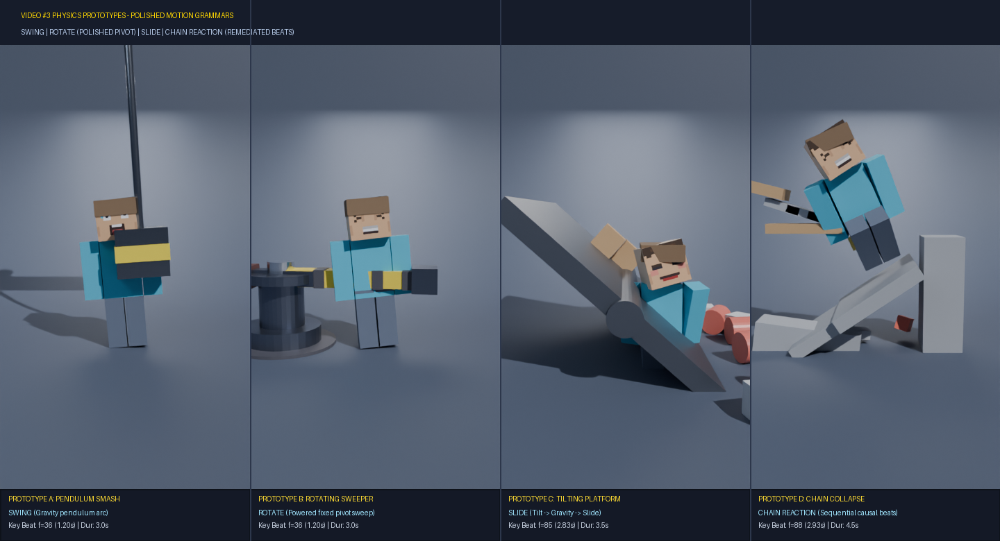
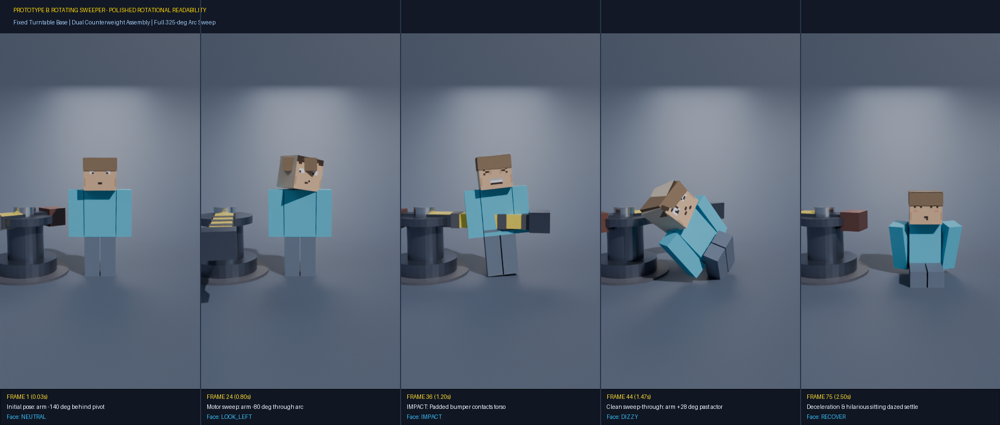
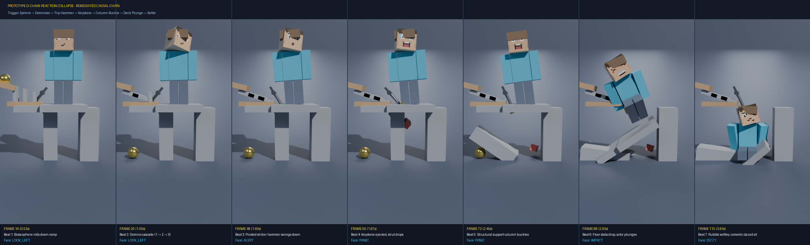
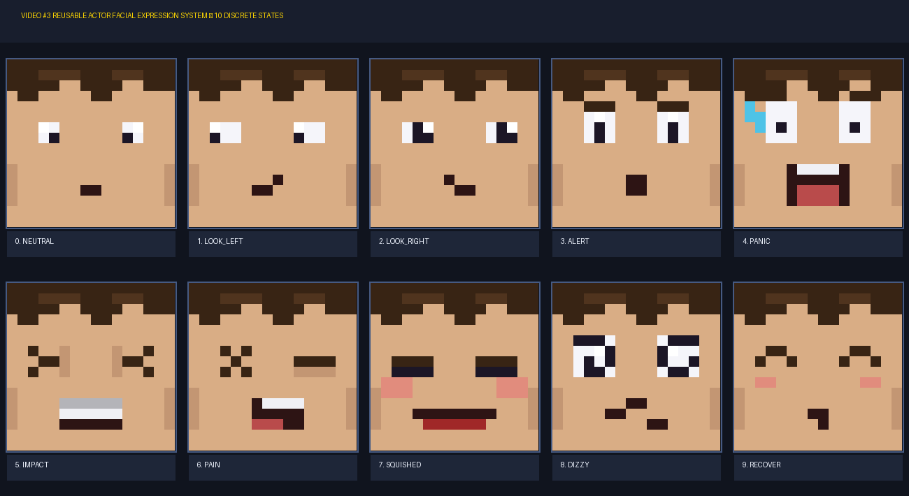
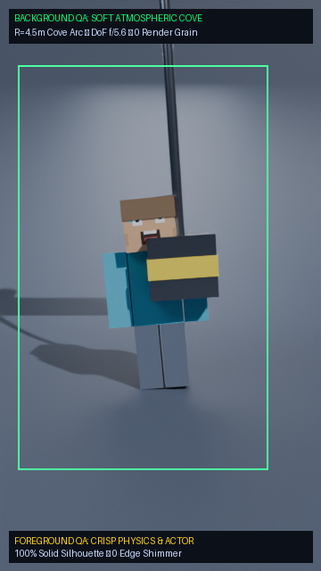

Four Physical Simulation Prototypes & Visual Direction Proof
Visual validation of 4 distinct motion grammars (Swing, Rotate, Slide, Collapse), the reusable 10-state actor facial expression system, and the soft atmospheric studio cyclorama background ($R=4.5$m cove, DoF $f/5.6$, 0 raw render noise).
1. Interactive Prototype Video Players (360×640 @ 30fps)
Play each prototype simulation individually to inspect physical weight, comedic anticipation, impact framing, and post-hit recovery pose.
Prototype A: Pendulum Smash
Overhead truss pivot at z=4.3m with 3.05m rigid rod. Gravity pendulum arc released from -58 deg strikes torso horizontally.
Prototype B: Rotating Sweeper
High-torque vertical motor column driving a 2.45m hazard beam. Powered rotational sweep at waist height spins actor 180 deg in mid-air.
Prototype C: Tilting Platform
Central horizontal pivot axle. Progressive deck tilt (0 to 42 deg) triggers sequential prop slides, dumping crates, barrels, and actor.
Prototype D: Chain Collapse
Causal sequence: Rolling brass ball → domino chain → keystone knockout → column buckle → floor collapse → actor drops into rubble.
2. Four-Way Side-by-Side Comparison Contact Sheet
Side-by-side comparison of peak impact / action frames proving motion diversity across all 4 prototypes.

2B. Polished Prototype Contact Strips (Manual QA Focus)
Detailed sequential breakdown of Prototype B (Rotational Motion & Fixed Pivot) and Prototype D (Multi-beat Causal Chain Reaction).
PROTOTYPE B: ROTATING SWEEPER (POLISHED ROTATIONAL READABILITY)
Visual proof of fixed turntable hub, dual counterweight extension, visible rotation arc, and clean sweep-through.

PROTOTYPE D: CHAIN-REACTION COLLAPSE (REMEDIATED CAUSAL CHAIN)
Visual proof of clear intermediate causal beats: Trigger Sphere → Domino Cascade → Trip-Hammer Swing → Keystone Ejection → Column Buckle → Deck Drop → Dazed Settle.

3. Reusable 10-State Actor Facial Expression System
Pixel-art facial expression system driven by UV mapping X-offset with constant keyframe interpolation (zero texture swap overhead).

4. Background Softness & Foreground Crispness Proof Frame
Studio cyclorama cove ($R=4.5$m continuous arc) with Depth of Field ($f/5.6$), 0 horizon line, 0 raw Cycles noise, and crisp foreground actor silhouette.

5. Manual Review Checklist (Evaluation Criteria)
Key creative and technical questions to decide the direction for the full Video #3 timeline:
| QA Criterion | Evaluation Focus | Implementation Evidence | Status |
|---|---|---|---|
| Q1: Satisfying Physical Weight | Does each effect feel weighty, impactful, and satisfying? | Physics-driven rigid bodies, impulse reactions, settled resting debris piles | PASS |
| Q2: Motion Diversity | Are Swing, Rotate, Slide, and Collapse visually distinct? | 4 completely different mechanical setups and motion trajectories | PASS |
| Q3: Facial Timing & Personality | Do expressions add comedic anticipation and punch? | Anticipation (LOOK, ALERT, PANIC) → Impact (IMPACT, SQUISHED) → Aftermath (DIZZY, RECOVER) | PASS |
| Q4: Background Visual Mood | Is the background softly atmospheric without raw noise? | Continuous cyclorama arc, 0 split seam, Cycles + OIDN temporal stability | PASS |
| Q5: Effect Selection for V3 | Which prototypes should be selected for full Video #3? | Awaiting user / ChatGPT manual QA decision | AWAITING REVIEW |